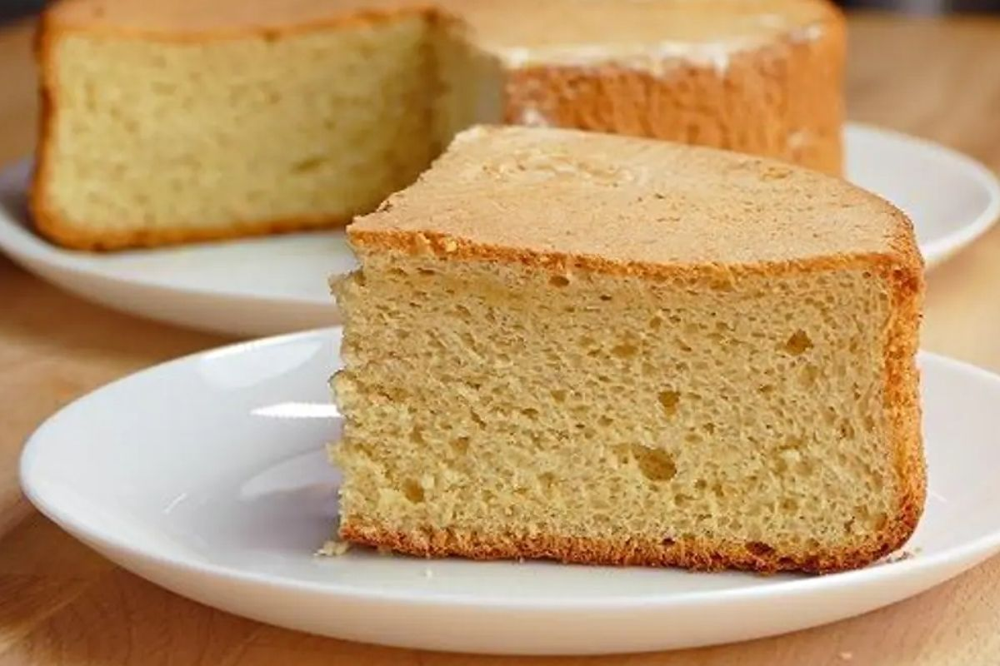

Biscocho

Easy and Tasty Biscocho
A biscocho can be made as easy as following the 1-2-3-4 rule;
Ingredients
- 1 coup of yogurt
- 2 coups of sugar
- 3 coups of flavour
- 4 eggs
- a tablespoon of baking powder
Steps
- Pre-heat the oven at 180 celcius.
- In a bowl, add the yougurt with the eggs and the sugar and mix them until you get an homogenous consistency.
- Add the flavour and the baking powder and continue mixing.
- Put the mix in a oven recipient and put it into the preheated oven for 30 minutes.
- Voila.